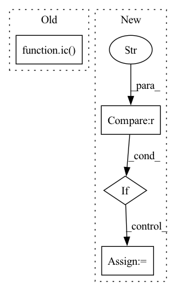

Pattern ID :1281
Before Change
:param tok: A pitch or a special token
:param duration: Duration in quarterLength
ic( tok, duration)
def __init__(self, precision: int):
self.prec = precision
self.tokenizer = MxlMelodyExtractor.Tokenizer._Tokenizer()After Change
dur = m21.duration.Duration(quarterLength=duration)
// ic(dur)
if isinstance(tok, str):
if tok == "[REST]" :
self.note = m21.note.Rest(duration=dur)
else:
ic(tok)
exit(1)In pattern: SUPERPATTERN
Frequency: 3
Non-data size: 4
Instances Fragment ID: 6326400
Project Name: stefanheng/symbolic-music-generation
Commit Name: 89513672d0d8e9bc6f6c96513ffaf42a3ec7e5f2
Time: 2021-12-23
Author: 43276957+SpongeBobBang@users.noreply.github.com
File Name: melody_extractor.py
M Class Name: Token
N Class Name: Token
M Method Name: __init__(3)
N Method Name: __init__(3)
M Parent Class:
N Parent Class:
M File Name: melody_extractor.py
N File Name: melody_extractor.py
M Start Line: 455
M End Line: 455
N Start Line: 455
N End Line: 468
Before Change
bar0 = part.measure(0)
ic(list(bar0))
tempo = next(bar0[m21.tempo.MetronomeMark])
ic( tempo, vars(tempo))
idx = bar0.index(tempo)
ic(idx)
ic(bar0.isSorted)
After Change
if title.endswith(".mxl"):
title = title[:-4]
if exp == "stream" :
fnm = f"{title}, bar with max pitch.mxl"
// ic(os.path.join(PATH_BASE, DIR_DSET, config(f"{DIR_DSET}.MXL_EG.dir_nm")))
scr.write(fmt="mxl", fp=os.path.join(PATH_BASE, DIR_DSET, config(f"{DIR_DSET}.MXL_EG.dir_nm"), fnm))
elif exp == "symbol": Fragment ID: 6326401
Project Name: stefanheng/symbolic-music-generation
Commit Name: 30a8207cd105223f3d0c073913fddd41937f1c22
Time: 2021-11-25
Author: 43276957+SpongeBobBang@users.noreply.github.com
File Name: melody_extractor.py
M Class Name: MxlMelodyExtractor
N Class Name: MxlMelodyExtractor
M Method Name: bar_with_max_pitch(2)
N Method Name: bar_with_max_pitch(2)
M Parent Class:
N Parent Class:
M File Name: melody_extractor.py
N File Name: melody_extractor.py
M Start Line: 322
M End Line: 370
N Start Line: 309
N End Line: 361
Before Change
sign_flip[sign_flip >= 0.5] = 1.0
sign_flip[sign_flip < 0.5] = -1.0
eig_vals = eig_vals.unsqueeze(0).repeat(eig_vecs.shape[0], 1)
ic( eig_vecs)
return torch.stack([eig_vals, eig_vecs], dim=-1)
def get_graph(self, idx):
if idx in self.dgl_graphs:After Change
sign_flip[sign_flip < 0.5] = -1.0
eig_vals = eig_vals.unsqueeze(0).repeat(eig_vecs.shape[0], 1)
return torch.stack([eig_vals, eig_vecs], dim=-1)
if return_type == "san_graph" :
g = self.get_san_graph(idx).to(self.device)
eig_vals, eig_vecs = self.get_pos_enc(idx)
eig_vals = eig_vals.to(self.device)
eig_vecs = eig_vecs.to(self.device)
sign_flip = torch.rand(eig_vals.shape[0], device=self.device)
sign_flip[sign_flip >= 0.5] = 1.0
sign_flip[sign_flip < 0.5] = -1.0
eig_vals = eig_vals.unsqueeze(0).repeat(eig_vecs.shape[0], 1)
g.ndata["pos_enc"] = torch.stack([eig_vals, eig_vecs], dim=-1)
return g Fragment ID: 6326385
Project Name: hannesstark/3dinfomax
Commit Name: a165907548f15c7571758457fe0867a83ad049dc
Time: 2021-07-03
Author: hannes.staerk@gmail.com
File Name: datasets/ogbg_dataset_extension.py
M Class Name: OGBGDatsetExtension
N Class Name: OGBGDatsetExtension
M Method Name: data_by_type(3)
N Method Name: data_by_type(3)
M Parent Class: GraphPropPredDataset
N Parent Class: GraphPropPredDataset
M File Name: datasets/ogbg_dataset_extension.py
N File Name: datasets/ogbg_dataset_extension.py
M Start Line: 50
M End Line: 55
N Start Line: 53
N End Line: 66